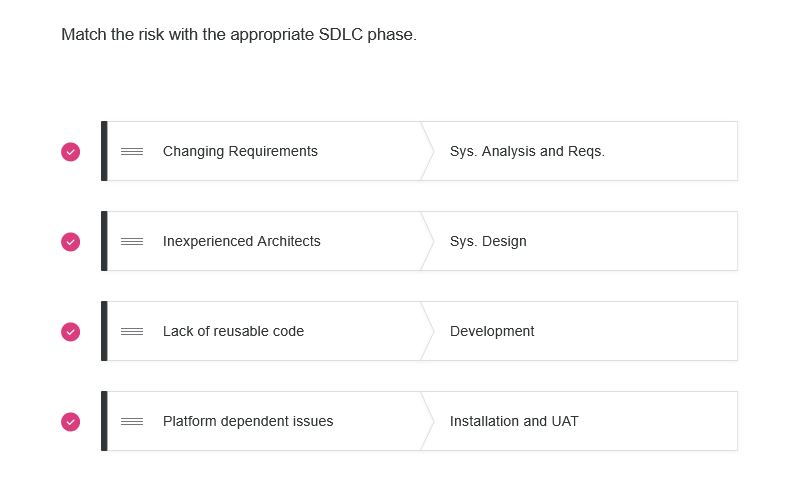
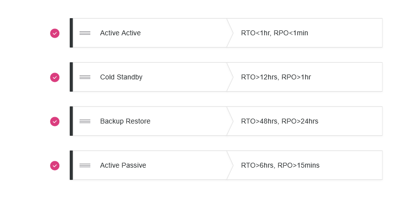

This module introduces students to the underpinning concepts and principles of Information Risk Management (IRM). This includes a review of traditional and contemporary Software Development Life Cycle (SDLC) models, focusing on the areas most affected by risk management considerations.
Module Objectives
- An understanding of the basic principles of information risk management.
- An understanding of the relationship between IRM and the SDLC.
- An understanding of the role of risk management and residual risk in the SDLC.
- An appreciation for current and future challenges, limitations and opportunities.
- The opportunity to reflect on and evaluate personal development.
Module outcomes
- dentify and critically analyse IT system risks and problems, and identify appropriate methodologies, tools and techniques to solve/mitigate them.
- Evaluate and adapt programs and systems to produce a solution that meets the design brief.
- Critically analyse and evaluate solutions produced.
- Systematically develop and implement the skills required to be an effective member of a development team in a virtual professional environment, adopting real-life perspectives on roles and team organisation.
Overall objectives
- Review a number of common definitions of Information Risk Management.
- Review some common Information Security Management Concepts.
- Discuss the Risk Management Process.
Unit outcomes
- Discuss the various definitions of risk.
- Explain how to assess, qualify and mitigate risks.
- Describe various approaches to quantify and qualify risks.
- List common risk standards and select the appropriate one(s) for a given situation.
Unit deliverables
- Creating the teams
- Team proejct introduction
- Creating the E-portfolio layout for Module 3- IRM
- Leacturecast - Definations, standards and approaches
- Book activation
- Unit 1 Reading
- Sutton, D. (2021) Information Risk Management. 2nd ed. Swindon, UK: BCS Learning & Development Limited. Chapters 1 - 3.
- Stoneburner, G., Goguen, A. & Feringa, A. (2002) SP 800-30: Risk Management Guide for Information Technology Systems.
- Hubbard, D. (2009) The Failure of Risk Management: Why It's Broken and How to Fix It.
- Blakley, B., McDermott, E. & Geer, D.(2001) Information Security is Information Risk Management. Proceedings of the 2001 workshop on New security paradigms 1(1): 97-104.
To access my unit 1 reflection "Click here"
Within this unit we have also finalized our team contract and submit it via email to our instructor, as the document contains names it wont be posted here
Overall objectives
- Review the Risk Management Process (RMP).
- Review the effects of different assessment types (Qualitative vs. Quantitative).
- Discuss potential changes to the RMP based on changes in user participation.
Unit outcomes
- Discuss the differences between assessment approaches (Qualitative vs. Quantitative).
- Explain the importance of user participation in the risk management process.
- Discuss the implications of any recommended mitigations.
Unit deliverables
- Formative activity : Discussion unit 1
- E-portfolio / Refliction
- Book activation
- Unit 2 Reading : Focusing on Risk Managment process, focusing on discussing the different approaches to assesment - Qualitative vs Quantitative
- Sutton, D. (2021) Information Risk Management. 2nd ed. Swindon, UK: BCS Learning & Development Limited. Chapters 4
- Spears, J. & Barki, H. (2010) User Participation in Information Systems Security Risk Management. MIS Quarterly 34(3): 503
- Hammad, M., Inayat, I. & Zahid, M., 2019. Risk Management in Agile Software Development: A Survey. 2019 International Conference on Frontiers of Information Technology (FIT). December 2019. Islamabad: Pakistan. DOI: 10.1109/FIT47737.2019.00039.
In this unit I have also submitted my initial Discussion post, to read the post please "Click here"
To access my unit 2 reflection "Click here"
within this unit we have started workign on team project status report as well
one of the diagrams created by me can be found if you "Click here"
Overall objectives
- Review the some of the various methodologies used to implement the SDLC – focussing on the difference between Agile and Waterfall methods.
- Discuss where risk affects each phase of the SDLC – and how some methodologies mitigate against it.
- Evaluate modern approaches – with a special focus on DevOps.
Unit outcomes
- Describe what the SDLC is – and the different implementation methodologies available.
- Explain how risks affect the SDLC.
- Describe how to mitigate risks in a selected SDLC methodology.
Unit deliverables
- Lecturecast - Risk and the SDLC
- Lecturecase keywords: Agile, Waterfall, SDLC, Risks in SDLC
- E-portfolio / Refliction
- Book activation
- Unit 3 Reading : focuses on the SDLC and common methodologies used to implement it in a development environment
- Rumbaugh, J. Ralston, A., & Reilly, E. (2003) Object Oriented Analysis and Design (OOAD) The Encyclopaedia of Computer Science. 4th Ed. UK: John Wiley and Sons Ltd.
- Abrahamsson, P., Warsta, J., Siponen, M. & Ronkainen, J. (2003) New Directions on Agile Methods: A Comparative Analysis. Proceedings of the 25th International Conference on Software Engineering (ICSE '03) 1(1): 244 - 254.
- Team Project status: report
- Peer Review: Status reports
To access my unit 3 reflection "Click here"
To access the status report please"Click here"
The peer review document wont be shared
The below image is to prove that I have completed the lecture-cast as well
if you have problems with the images please use firefox as a browser
Overall objectives
- Review some studies around risk and its impact on the SDLC.
- Discuss the different risks that can affect each stage of the SDLC.
- Discuss possible mitigations for the most common risks.
Unit outcomes
- Explain the differences between common studies of risk and the SDLC.
- Describe the most common risks encountered at each phase of the SDLC.
- Propose some mitigations for the most common risks.
Unit deliverables
- Lecturecast - Risk and the SDLC
- E-portfolio / Refliction
- Book activation
- Unit 4 Reading : focuses on risk and SDLC That provide approches to understanding cause and effect of risk factors
- Hijazi, H., Alqrainy, S., Muaidi, H. & Khdour, T. (2014) Identifying Causality Relation between Software Projects Risk Factors. International Journal of Software Engineering and Its Applications 8(2): 51-58.
- Roy, B., Dasgupta, R. & Chaki, N. (2015) A Study on Software Risk Management Strategies and Mapping with SDLC. Advances in Intelligent Systems and Computing 1(1): 121-138. DOI: https://doi.org/10.1007/978-81-322-2653-6_9.
- Ross, R., McEvilley, M. & Oren, J. (2016) Systems security engineering: considerations for a multidisciplinary approach in the engineering of trustworthy secure systems, volume 1
- Disscusion 2
To access my unit 4 reflection "Click here"
within this unit we started preparing for final project and had several meetings to organize the tasks. I was assigned to work on the DR section of it
below is in image to the DR process that I have created and drafted

if you have problems with the images please use firefox as a browser
Overall objectives
- Review how and why to create business continuity (BC) and disaster recovery (DR) plans.
- Discuss the main determining factors in BC/DR plans – including Business Impact Assessments (BIA), Recovery Time Objectives (RTOs) and Recovery Point Objectives (RPOs).
- Discuss emerging trends in Information Risk Management.
Unit outcomes
- Explain what is meant by BC, DR, RTO and RPO.
- Suggest the most suitable solutions to meet specific recovery objectives.
- Discuss some of the factors driving the future of the Information Risk Management field.
Unit deliverables
- Lecturecast - Risk, BC and DR
- Lecturecast Keywords BC, DR, RTO, RPO, cloudDRaaS, resilence, replication, PITR, LRS ,
- E-portfolio / Refliction
- Unit 5 Reading : focuses on backgournd material around BC and DR planning
- Sutton, D. (2021) Information Risk Management. 2nd ed. Swindon, UK: BCS Learning & Development Limited. Chapter 8.
- Alhazmi, O. & Malaiya, Y. (2013) Evaluating Disaster Recovery Plans using the Cloud. 2013 Proceedings Annual Reliability and Maintainability Symposium (RAMS) 1(1): 1-6.
- Pineiro-Chousa, J., Vizcaíno-González, M., López-Cabarcos, M. & Romero-Castro, N. (2017) Managing Reputational Risk through Environmental Management and Reporting: An Options Theory Approach. Sustainability 9(3): 376-391.
- Fahimnia, B., Pournader, M., Siemsen, E., Bendoly, E. & Wang, C. (2019) Behavioral Operations and Supply Chain Management–A Review and Literature Mapping. Decision Sciences 50(6): 1127-1183.
- Ridley, A., McCloskey, J. & Mountain, D. (2018) Machine Learning for Autonomous Cyber Defense. The Next Wave 22(1): 7-14.
- Varshney, K. & Alemzadeh, H. (2017) On the Safety of Machine Learning: Cyber-Physical Systems, Decision Sciences, and Data Products. Big Data 5(3): 246-255..
- Fraser, J. & Simkins, B. (2016) The Challenges of and Solutions for Implementing Enterprise Risk Management. Business Horizons 59(6): 689-698.
- Marks, L. (2019) The Optimal Risk Management Framework: Identifying the Requirements and Selecting the Framework.
- Aven, T. (2016) Risk assessment and risk management: Review of recent advances on their foundation. European Journal of Operational Research 253(1): 1-13..
- Disscusion 2
To access my unit 5 reflection "Click here"
I have added more to the DR section which can be found " here"
For Disscusion 2, I have created a powerpoint which can be found " here"
we have all contributed to the disscusion and shared our top 5 risks and top 5 resolutions and disscused it online to highlight what we agreed on
The following is an image to prove that I have compeleted the Risk, BC and DR lecture cast
if you have problems with the images please use firefox as a browser
Overall objectives
- Discuss the trends that could contribute or determine the future of the information risk management (IRM) field.
- Review the NSA ‘hard problems’ and discuss what contribution IRM has to them.
- Create a wiki that contains answers to key questions about the future of IRM.
Unit outcomes
- Describe the major trends driving the future of IRM.
- Enumerate the NSA hard problems, and argue which are affected by IRM.
- Contribute to the argument supporting your preferred influencing factor.
Unit deliverables
- Lecturecast - Risk and the SDLC
- E-portfolio / Refliction
- Book activation
- Unit 4 Reading : focuses on risk and SDLC That provide approches to understanding cause and effect of risk factors
- Adam, T. (2015) The Science of Security 5 Hard Problems. Science Of Security and Privacy.
- Disscusion 2
To access my unit 6 reflection "Click here"
To access individual Refelections on the course please "Click here"
my peer evaulation has also been submited. however, it wont be added here
our team final status report can be found " here"